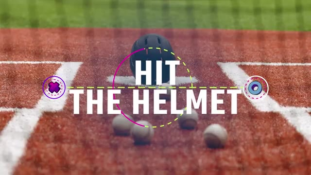
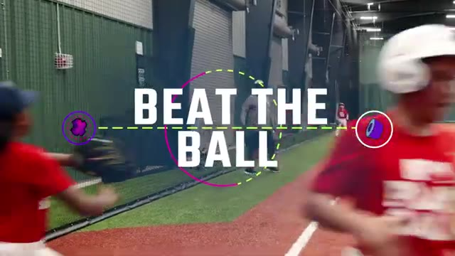
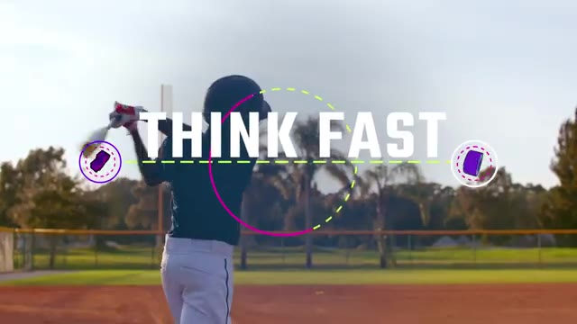
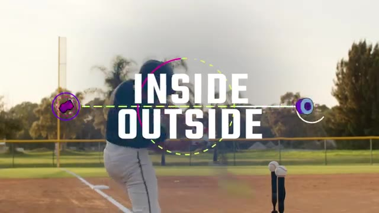
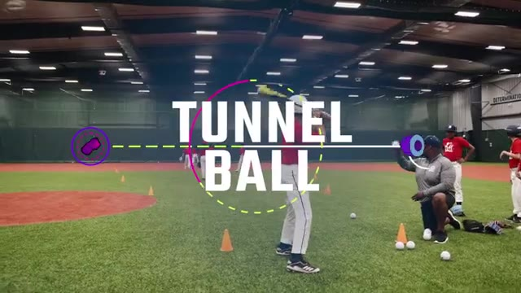
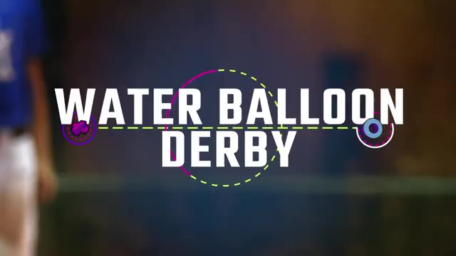

6 Crowd-Favorite Drills · Throwing, Hitting & Base Running
The fun stuff — kid-tested.
A grab-bag of throwing, hitting and base-running games from MOJO — built so 9U players keep moving, compete a little, and stay locked in. Tap any row to jump to the breakdown.
Throwing accuracy under a tiny bit of pressure — with a dollar on the line.

▶ Watch · 0:13
Setup
- Place a helmet on home plate (stick a $1 bill in a vent for stakes)
- Line the team up at shortstop — or closer for younger arms
- Bucket of balls at the front of the line
How to Play
- Player grabs a ball, gets one throw at the helmet
- Bounces are fine — you just have to hit it
- First player to hit it wins the round (and the dollar)
- Move the line back and play again
Coaching tip
If they're spraying it, remind them to point their non-throwing arm at the target as they throw. Glove side leads, ball side follows.
Infield throws around the horn versus a sprinting base runner.

▶ Watch · 3:52
Setup
- 5 players: 1B, 2B, SS, 3B, catcher at home
- Rest of the group lines up as runners behind home
- Place a ball halfway up the line from home to 3rd
How to Play
- On your call, the runner sprints around the bases
- 3B charges in to field the ball, SS slides over to cover 3rd
- Fielders throw around the diamond: 1 → 2 → 3 → home
- Race to beat the runner back to the plate
Coaching tip
Fielders: keep your feet moving through every transfer — that's how the throws stay in rhythm. Runners: head down, ignore the ball, just hustle.
Pitch recognition — decide mid-swing which ball to hit.

▶ Watch · 6:14
Setup
- Hitters line up in foul territory
- Coach 4 ft to the side of home with a bucket of two-color plastic balls
- First hitter steps in with a bat
How to Play
- Soft-toss two balls at the same time — one of each color
- Mid-air, call out one color — hitter must adjust and hit that one
- +1 per successful hit, 5 swings per turn
- Most points after everyone bats wins
Coaching tip
The hidden skill here is the "no" decision. Knowing which pitch not to swing at is just as valuable as knowing which one to crush.
Directional hitting — pull the inside pitch, push the outside pitch.

▶ Watch · 8:29
Setup
- Two tees at home: inside tee at hip height, outside tee at thigh height
- Hitters line up in foul territory
- Coach to the side with a bucket of balls
How to Play
- Round 1: swing at the inside tee — aim between SS and 3B
- Round 2 (after 6 swings): swing at the outside tee — aim between 1B and 2B
- +1 each time they hit on target
- Challenge them to beat their score next round
Coaching tip
Different pitch location, same swing thought: stay inside the ball and drive a line drive. Don't let them yank either pitch — control beats power here.
Drive the ball back up the middle — the highest-percentage hit in the game.

▶ Watch · 9:42
Setup
- Two lines of 5 cones forming a 5 ft “tunnel” — narrow at the hitter end, wider out
- Split team into hitters and fielders — fielders spread out inside the tunnel
- Coach soft-tosses from the narrow end
How to Play
- Ball lands inside the tunnel & not fielded cleanly = run
- Caught fly, clean grounder, or ball outside the cones = out
- 3 outs → teams switch
- Most runs after 3 innings wins
Coaching tip
Buried under all the fun is one hitting fundamental: think up the middle every swing. It's the best way to make contact against any pitch they'll see in a real game.
Hot-day reward drill — balance and a level swing get the biggest splash.

▶ Watch · 11:04
Setup
- Hitters line up in foul territory
- Coach kneels beside home plate with a bucket of water balloons
- Towels nearby — trust me
How to Play
- Soft-toss a balloon into the strike zone
- Hitter swings, aiming for a watery blast
- Everyone gets a turn — get as soaked as possible
Coaching tip
They'll want to swing out of their shoes. Remind them the biggest explosion comes from balance and a level swing — same cue as a real at-bat, dressed up in water.